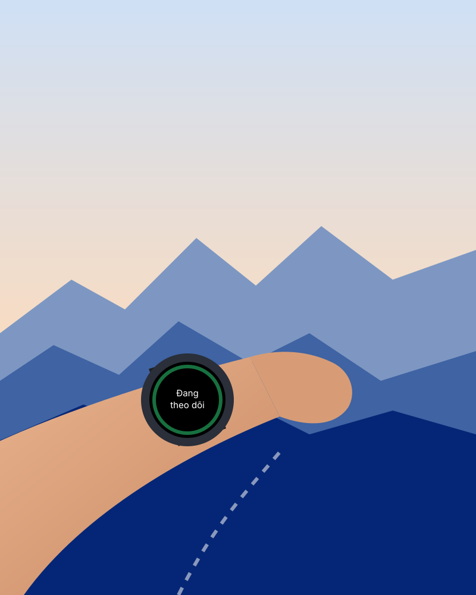
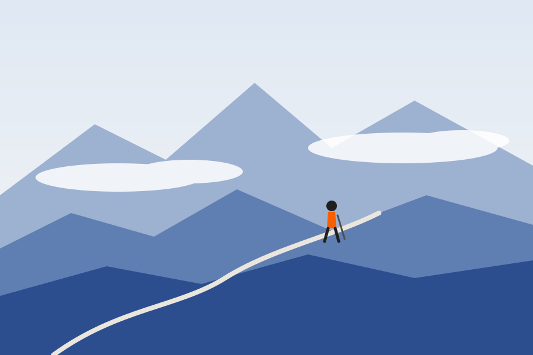

Chương 1 · Đi
Bạn chạy một mình
Đồng hồ chạy nền, theo dõi chuyển động và nhịp tim. Không cần mở ứng dụng, không cần làm gì thêm.
Đồi ThôngĐang theo dõi · mọi thứ ổn
1 · Hero — nền sáng, logo trên nền trắng (DESIGN.md). Motion: tiêu đề hiện dần từng chữ khi tải; ảnh trôi nhẹ (parallax) khi cuộn; thanh tiến độ xanh trên cùng
Beta · Wear OS
Seize Guard là ứng dụng cho đồng hồ Wear OS. Khi phát hiện bạn có thể đã ngã, đồng hồ hỏi bạn có ổn không. Nếu bạn không trả lời, nó gửi cảnh báo và vị trí cho người thân.
Miễn phí trong giai đoạn beta · Cần đồng hồ Wear OS 5 trở lên

2 · Vấn đề — tình huống thật, không số liệu
Khi đi một mình
Bạn ra khỏi nhà lúc 5 giờ sáng, không ai đi cùng. Nếu có chuyện, sẽ không ai ở đó để gọi giúp.
Ngã ở khúc cua trong rừng, điện thoại nằm trong balo, sóng chập chờn. Bạn có thể không tự gọi được.
Người nhà chỉ thấy lạ khi bạn không về đúng giờ. Khi đó đã mất nhiều giờ quý giá.
3 · Cách hoạt động — 3 bước
01
Đăng nhập trên web, nhập mã hiện trên đồng hồ để liên kết với tài khoản của bạn.
02
Mời người nhà bằng email. Họ là những người nhận cảnh báo khi có chuyện.
03
Khi nghi bạn ngã, đồng hồ hỏi “Bạn ổn chứ?”. Không phản hồi trong 20 giây thì cảnh báo được gửi.
4 · Chương câu chuyện — dải tối duy nhất; desktop: hình dính (sticky) bên phải, đổi theo chương; mobile / giảm chuyển động: xếp chồng tĩnh. Motion (cuộn): ch1 vẽ đường mòn + chấm chạy; ch2 chữ “NGÔ rơi lộn + sóng gia tốc nhói lên; ch3 vòng 20 giây đếm ngược theo cuộn; ch4 “Chờ sóng” → “Đã gửi”; ch5 thẻ trượt vào, ghim rơi xuống. Không nháy, không chớp.
Một buổi sáng trên đường mòn
Chương 1 · Đi
Đồng hồ chạy nền, theo dõi chuyển động và nhịp tim. Không cần mở ứng dụng, không cần làm gì thêm.
Đồi ThôngĐang theo dõi · mọi thứ ổn
Chương 2 · Ngã
Đồng hồ nhận ra chuyển động bất thường giống một cú ngã và rung mạnh để gọi bạn.
NGÃ
Chuyển động giống một cú ngã · đồng hồ rung
Chương 3 · Hỏi
Bạn có 20 giây để bấm “Tôi ổn”. Nếu bạn ổn, không có gì được gửi đi và không ai bị làm phiền.
Bạn ổn chứ?
Tự gửi sau 14 giây
Tôi ổnChương 4 · Cảnh báo
Đồng hồ gửi cảnh báo kèm vị trí quanh thời điểm sự cố. Nếu chưa có sóng, cảnh báo nằm trong hàng đợi và tự gửi khi có sóng.
Đã gửi
Máy chủ đã nhận cảnh báo
Chờ sóngĐã gửi
Chương 5 · Người thân
Họ nhận email và thấy cảnh báo trên web, cùng bản đồ vị trí và thẻ SOS của bạn.
Minh có thể đã ngã
06:12 · gần Đồi Thông · ±25 m
5 · Tính năng chính — chỉ những gì đã làm (không có: theo dõi trực tiếp, xác nhận “đang đến”, leo thang)
Đồng hồ nhận ra chuyển động giống một cú ngã và hỏi bạn trước khi báo. Tính năng đang trong giai đoạn beta.
Tự gửi cảnh báo khi cần. Đếm ngược 5 giây trước khi gửi để tránh bấm nhầm.
Đồng hồ lấy vị trí ở vài mốc quanh thời điểm cảnh báo và hiện trên bản đồ cho người thân.
Cảnh báo đến hộp thư của người trong vòng tròn và hiện ngay trên trang web.
Nhóm máu, dị ứng, thuốc đang dùng và liên hệ khẩn cấp. Người cứu giúp quét mã là đọc được.
Seize Guard bắt đầu từ nhu cầu của người sống chung với động kinh. Bạn có thể báo “sắp co giật” bằng một nút bấm, và người thân nhận cảnh báo cùng thẻ SOS của bạn.
6 · Vùng núi — nói thẳng về sóng
Cho vùng núi
Khi không có mạng, cảnh báo được lưu trên đồng hồ và tự gửi lại ngay khi có sóng, kể cả khi ứng dụng bị tắt.
Cần có sóng vào một lúc nào đó. Đồng hồ không dùng vệ tinh. Nếu suốt thời gian đó không có mạng, cảnh báo chưa thể tới người thân.

7 · Giới hạn và an toàn — bắt buộc
Trong tình huống khẩn cấp, hãy gọi 115 hoặc lực lượng cứu hộ địa phương.
Ở vùng hoàn toàn không có sóng, hãy mang thiết bị liên lạc vệ tinh.
Với cung đường khó hoặc dài, đi cùng người khác và báo lộ trình trước.
Đây là bản beta. Phát hiện té ngã có thể bỏ sót hoặc báo nhầm; vì vậy đồng hồ luôn hỏi bạn trước khi gửi.
8 · Quyền riêng tư — điểm khác biệt
Quyền riêng tư
Không có sự cố thì đồng hồ không đọc vị trí. Vị trí là tùy chọn, bạn có thể không cho phép.
Dữ liệu sức khỏe chỉ được thu sau khi bạn đồng ý trên đồng hồ.
Tải toàn bộ dữ liệu về hoặc xóa tài khoản ngay trong phần Cài đặt.
Bản đồ chạy trên máy chủ của chúng tôi. Vị trí của bạn không được gửi cho dịch vụ bản đồ bên thứ ba.
9 · Bằng chứng xã hội — chưa có trích dẫn/logo thật nên không hiển thị; thay bằng lời mời câu lạc bộ
Chúng tôi đang mở beta cho các câu lạc bộ chạy trail và leo núi. Nhóm của bạn muốn thử và góp ý?
Đăng ký cho câu lạc bộ10 · Tương thích và giá — giá chờ chủ dự án xác nhận (D2)
Wear OS 5+
Đồng hồ chạy Wear OS 5 (Android 14) trở lên.
Trình giả lập
Wear OS 5 và 6. Đang thử trên đồng hồ thật; danh sách sẽ cập nhật tại đây.
◷ Đang thử nghiệmMiễn phí
Trong giai đoạn beta.
11 · Hỏi đáp — details/summary, mở được bằng bàn phím
Chúng tôi đang đo trên đồng hồ thật và sẽ chỉ công bố con số khi đã đo xong. Vị trí chỉ được đọc khi có sự cố để tiết kiệm pin.
Cảnh báo được lưu trên đồng hồ và tự gửi khi có sóng trở lại. Nếu suốt thời gian đó không có mạng, cảnh báo chưa thể tới người thân. Xem phần vùng núi.
Có thể, vì đây là bản beta. Vì vậy đồng hồ luôn hỏi “Bạn ổn chứ?” và chờ 20 giây; bấm “Tôi ổn” thì không có gì được gửi.
Trên máy chủ của Seize Guard. Chỉ người trong vòng tròn của bạn xem được cảnh báo, và bạn có thể xuất hoặc xóa dữ liệu bất cứ lúc nào.
Hiện chưa. Seize Guard chỉ chạy trên đồng hồ Wear OS. Người thân dùng iPhone vẫn nhận cảnh báo qua email và web.
12 · CTA cuối — đích của nút danh sách chờ (D1)
Tham gia danh sách chờ, chúng tôi sẽ báo khi bản beta sẵn sàng cho đồng hồ của bạn.